TapSOSDesigning a silent way to reach emergency services
TapSOS is a free, accredited app that lets people contact the UK Police, Ambulance, Fire & Rescue and Coastguard without speaking.
Role
End-to-end UX and UI
Company
Inclutech
Team
UX team of 2
Release
TapSOS 2.0, August 2026
Platform
iOS and Android
Designed with
Deaf and disabled people
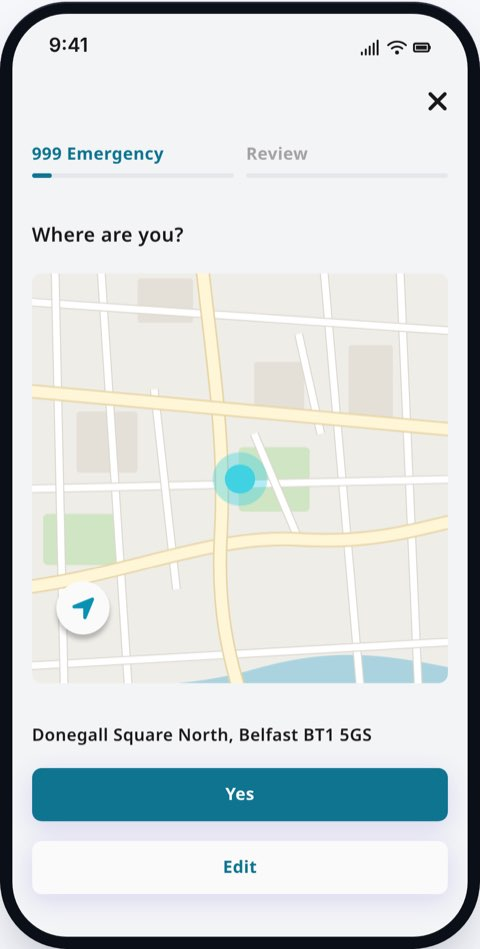
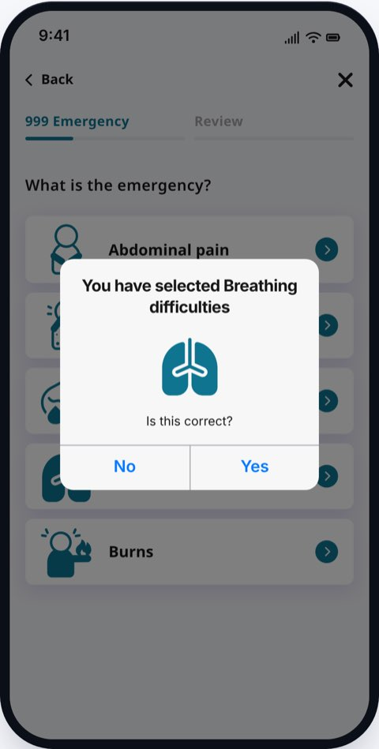
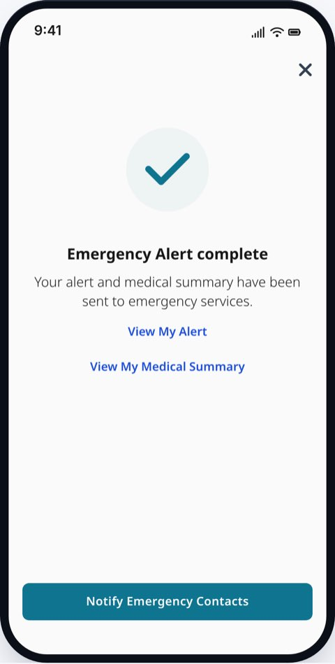
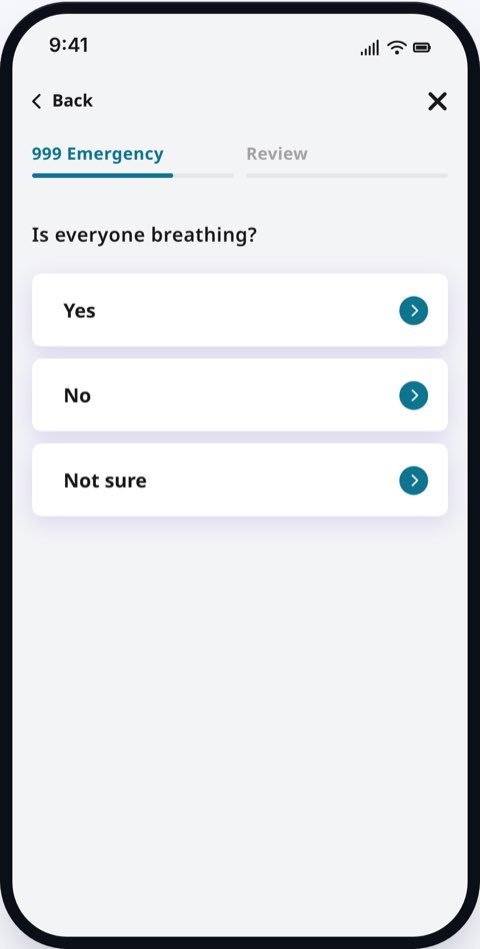
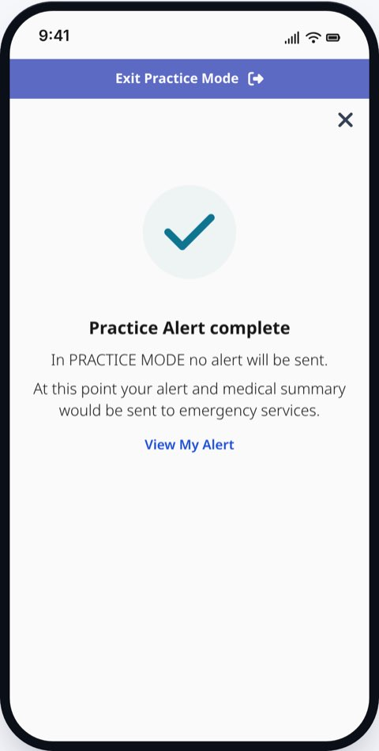
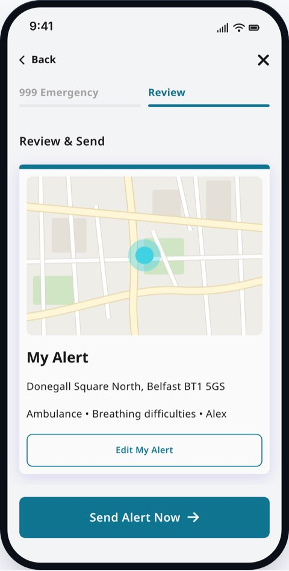
Every step of a silent 999 alert, from sharing your location to the alert being sent. Screens rebuilt from the TapSOS 2.0 release, with fictional people and places.
01Background
Help was on the way. People just couldn’t tell.
The first version of TapSOS already let people send a 999 alert without speaking. But once it was sent, people were left with questions. Where did the alert go? Is anyone dealing with it? Is there an idea of when help will arrive?
Without answers, people couldn’t be confident that help was actually on the way, which is the one thing they need to know in an emergency. TapSOS 2.0 set out to guide people through every step and reassure them that their alert had been received and was being handled.
The brief
A fast, safe, accessible alternative to a voice call that reduces stress while giving responders accurate information.
02The problem
Emergency services still assume you can speak.
Calling 999 usually means talking to a call handler: saying which service you need, where you are and what has happened. For people who are Deaf, have hearing loss or can’t speak, that first step is the barrier.
It is also a barrier during a medical event, or anywhere that speaking out loud isn’t safe.
What success meant
Every person gets the service they need, without overcomplicating the steps to get there.
What it needed to do
Let people contact help without speech
Cut cognitive load for people under pressure
Meet a range of communication needs
Scale through a growth-ready design system
03Who it leaves out
This isn’t an edge case.
18m+
people in the UK are deaf, have hearing loss or tinnitus.1
16m
people in the UK, 24% of the population, are disabled.2
87,000
Deaf people in the UK use British Sign Language, a language of its own, not signed English.3
2.3m
adults in England and Wales experienced domestic abuse in a single year, one situation where a call can be unsafe.4
Sources: 1. RNID. 2. DWP, Family Resources Survey 2021 to 2022. 3. British Deaf Association. 4. ONS, Crime Survey for England and Wales, year ending March 2024.
04Discovery
Evidence-based decisions, not assumptions.
Starting with where things actually went wrong for people, day to day.
Research began by finding where the real problems were: what people ran into in everyday life, and the obstacles they faced when they needed help. One came up again and again: there was little guidance on how to ask for help without using your voice.
User research and journey mapping
Understanding real moments of crisis, and where a voice call fails people.
Competitor analysis
Direct and indirect, mapping what exists and where the gaps are.
Affinity mapping
Clustering findings into the themes that shaped priorities.
Site maps and storyboards
Sketching structure and scenarios before opening Figma.
Collaborative teamwork
Bringing the wider team into the problem to align early.
Defined success criteria
Clear measures, so design choices could be judged rather than debated.
05Accessibility first
Accessibility was not an afterthought.
Accessibility was treated as a core design priority rather than a final check. Every decision was made to reduce barriers and help people act quickly and confidently when it mattered most.
Colour contrast
Legible for people with visual impairments, checked against WCAG with Stark.
Type
Sized and spaced to scan quickly under stress.
Touch targets
Generous, for people with limited dexterity.
Simple choices
Each screen stripped back to as few decisions as possible.
Status indicators
Reassurance that an action actually completed, the gap TapSOS 1.0 left open.
06Sketch to system
From lo-fi wireframes to a scalable design system.
I moved from lo-fi wireframes through mid-fidelity flows to interactive prototypes, simplifying the interactions and the hierarchy with each pass.
Colours, type, spacing, components and interaction patterns were defined early, so the product stayed consistent, accessible and ready to grow.
System foundations
Type scale
Spacing
Colour tokens
Navigation
Buttons
Input fields
Status states
Avatars
07The answer
Replace the call with pictures and short questions.
Users choose the service they need, confirm their location and describe the emergency with pictures and short questions. The alert reaches a BT 999 handler through the emergencySMS service.
The problem
You can’t tell a call handler where you are or what’s happening.
The answer
Alerting flow
Location, service, then what is happening, told with pictograms and yes/no questions.
The problem
You can’t explain your conditions, medication or allergies.
The answer
Medical profile
Blood group, conditions, medication and allergies are sent with each alert.
The problem
An emergency is the worst time to use an app for the first time.
The answer
Practice mode
Rehearse a full alert without contacting 999.
08Barrier by barrier
Everything a call handler would ask, answered without speaking.
Each step of a 999 call becomes a screen, in the order a handler would need it.
Barrier 1
Saying where you are
The problem
A handler needs your location first, and you can’t tell them.
The answer
The phone’s location is shown on a map with the street address. One tap confirms it, or Edit lets the user move the pin.
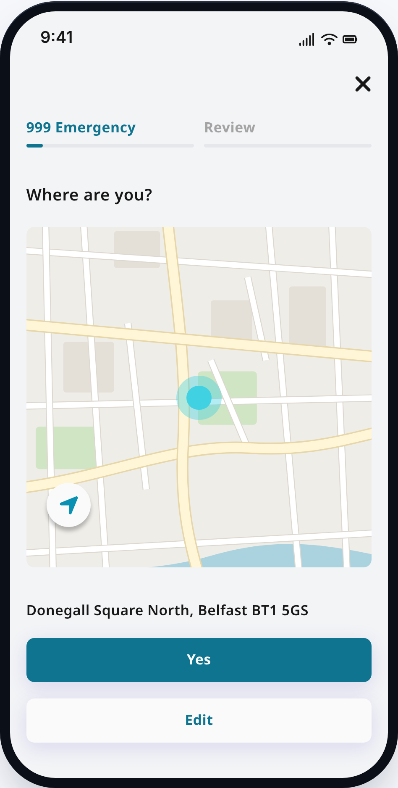
Barrier 2
Asking for the right service
The problem
On a call, you would say which service you need.
The answer
All four UK 999 services in a two-by-two grid of large, pictured buttons.
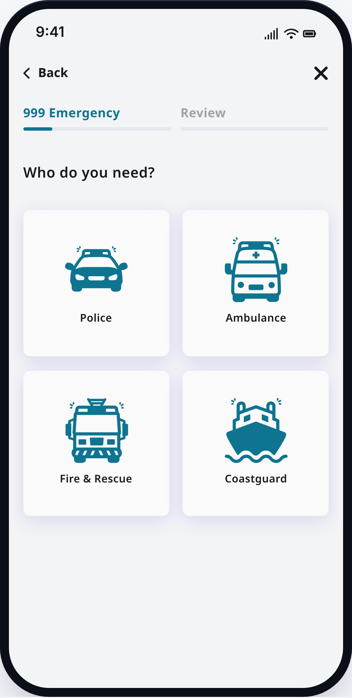
Barrier 3
Describing what is happening
The problem
Explaining an emergency normally takes words.
The answer
A list of pictured emergencies for the chosen service. Ambulance has 21, and there are 59 pictograms across the app.
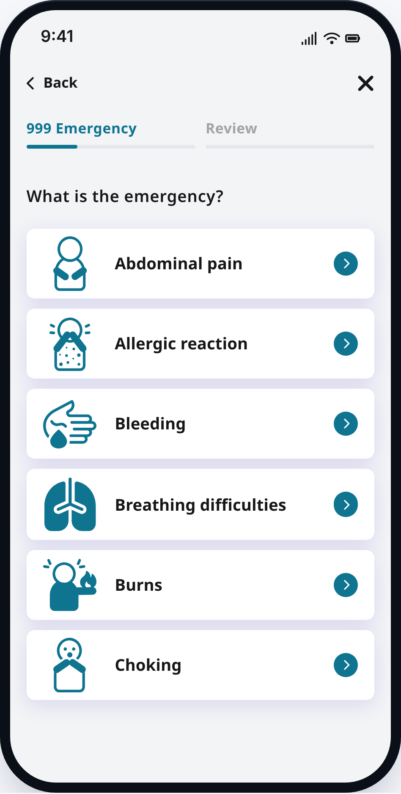
Barrier 4
Choosing the wrong thing by mistake
The problem
On a call, a handler can check they’ve understood you. A screen can’t, unless it asks.
The answer
The chosen pictogram is shown back at a larger size, so a mis-tap is easy to catch.
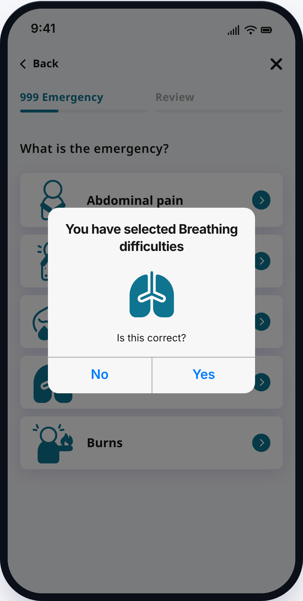
Barrier 5
Answering the handler’s questions
The problem
A handler asks follow-up questions to judge how serious it is.
The answer
The questions a 999 handler would ask, answered with Yes, No or Not sure. Breathing, bleeding, then awake. Blood group, conditions, medication and allergies are sent with each alert.
Barrier 6
Knowing it’s right before it goes
The problem
Without a conversation, there’s no moment to go back over what you’ve said.
The answer
One summary card of location, service and emergency, with a clear last chance to edit before sending.
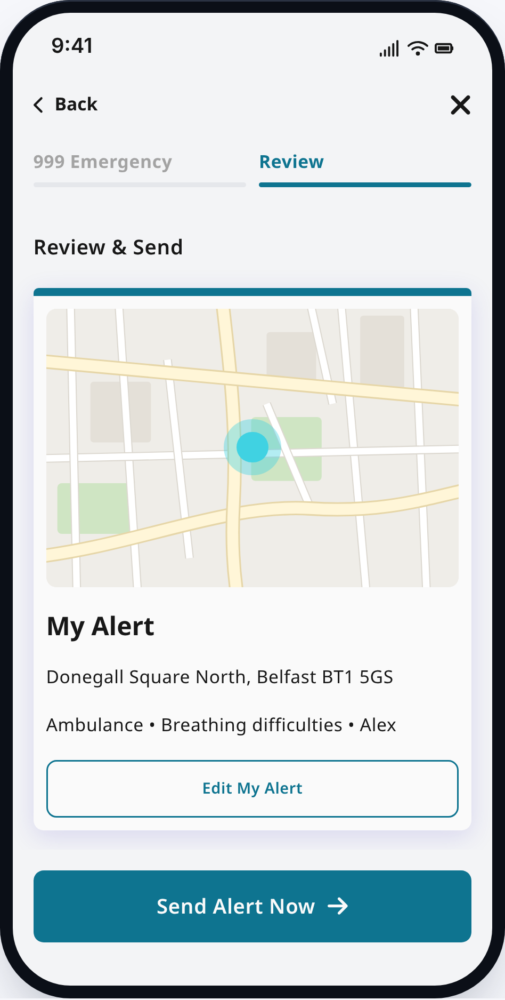
Barrier 7
Knowing help is coming
The problem
A call ends with a voice telling you what happens next. A silent alert needs its own reassurance.
The answer
A calm confirmation, links to what was sent, and a one-tap way to tell emergency contacts.
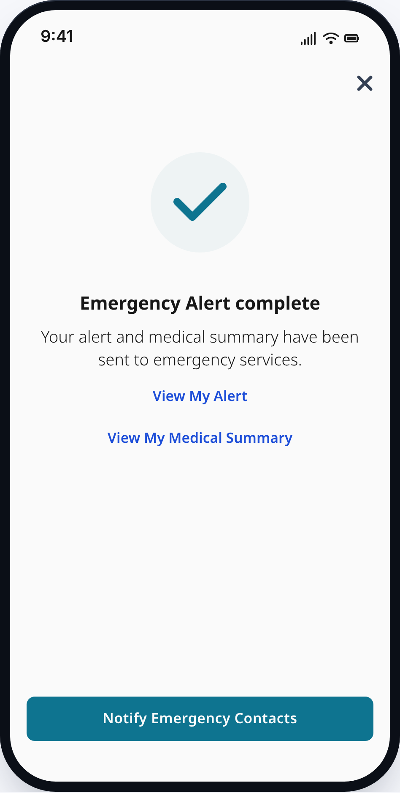
Barrier 8
Using it for the first time in a real emergency
The problem
The worst time to learn a new app is during an emergency.
The answer
The same flow with a purple Exit Practice Mode band on every screen, so people can rehearse without calling 999.
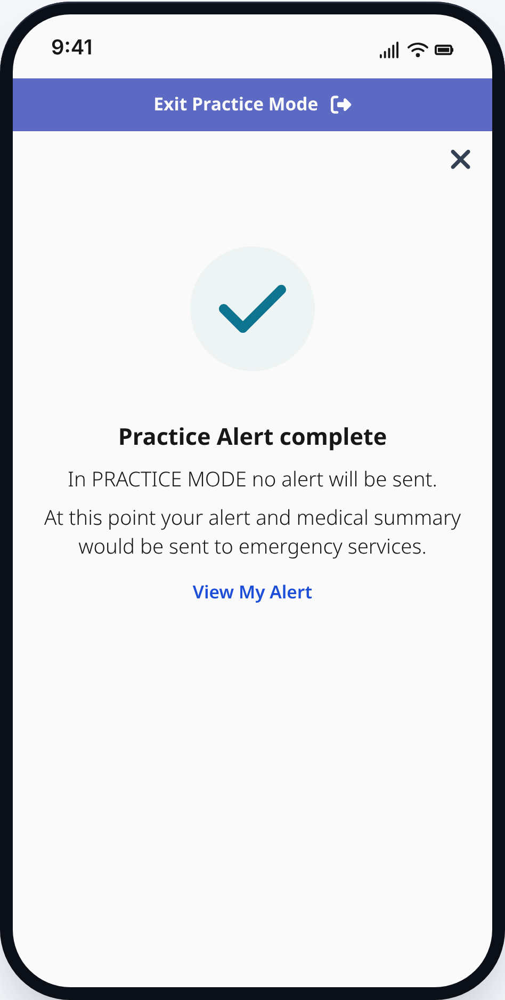
Barrier 9
Not everyone reads English
The problem
An emergency app has to work in the language people actually use.
The answer
The app is set in Noto Sans, chosen for its wide language coverage, which the app needs for its 17 languages.
The 17 languages
English
Irish
Welsh
Arabic
Bengali
German
Spanish
French
Gujarati
Italian
Punjabi
Polish
Portuguese
Portuguese (Portugal)
Romanian
Slovenian
Urdu
Send Alert Now
5.36:1Passes WCAG AA for normal text
TapSOS teal (#0E7490) against white, the colour of the main action button.
09A visual vocabulary
59 pictures that do the talking.
59 pictograms let someone show what is happening without words, from a heart attack to a boat in trouble.
Abdominal pains
Allergic reaction
Animal bite
Anti-social behaviour
Bleeding
Boat collision
Boats in trouble
Breathing difficulties
Burglary
Burns
Choking
Damage to property
Dog rescue at sea
Domestic abuse
Dropping litter
Drowning
Drugs
Drunken behaviour
Electrical shock
Fare evasion
Fire
Fraud
Gangs or riots
Gas leak
Harassment
Hate crime
Heart attack
Heat stress
Hijack
Hostage
Hypothermia
Incident
Industrial accident
Knife crime
Mental health and suicide
Missing person
Mountain fire
Person attempting suicide
Person in trouble on the coast
Person in water
Person walking
Physical assault
Pregnancy
Sand hole collapse
Seizure or epilepsy
Sexual assault
Smoking
Sporting accident
Stolen goods
Stroke
Stuck in mud
Stuck person
Terror attack
Theft
Trauma accident
Unresponsive or unconscious
Vandalism
Vehicle collision
Virus
All 59 emergency pictograms in TapSOS 2.0.
Police
Ambulance
Fire & Rescue
Coastguard
The four 999 services on the “Who do you need?” screen.
Is someone in danger?
Is the crime active?
Is the perpetrator present?
Is this water, gas or electric?
Icons for the yes/no switches on the “Tell us what’s going on” screen, which decide whether a report is a 999 emergency.
10Testing
Testing with the people it’s for.
High-fidelity designs were validated in usability testing with members of the Deaf community and people with a range of communication needs, working alongside interpreters. Their feedback drove multiple rounds of iteration.
An emergency app for Deaf and disabled people only works if it’s shaped by them, so each round of testing changed the design.
11What it achieved
A silent route to every UK 999 service.
1st
Accredited for all four services
TapSOS was the first 999 app accredited to reach all four UK emergency services.
4
Services, without speaking
Police, Ambulance, Fire & Rescue and Coastguard, with the alert reaching a BT 999 handler through the emergencySMS service.
17
Languages
From English, Irish and Welsh to Arabic, Punjabi and Urdu.
Free
For everyone who needs it
TapSOS is a free app, live on the App Store and Google Play.
What the design work changed
A clearer emergency journey
Testing and iteration removed ambiguity around the key actions.
More accessible interaction
Accessibility requirements shaped the hierarchy, interaction states and navigation.
Validated with the people it’s for
The experience was tested with members of the Deaf community.
A scalable foundation
Reusable patterns kept the product consistent as it grew.
12Reflection
Designing beyond the interface, and letting evidence lead.
TapSOS strengthened my understanding of accessibility, collaborative product development and evidence-based design. It showed the value of validating decisions through continuous feedback from the people who rely on the product, rather than relying on assumptions.
The biggest lesson came from TapSOS 1.0 itself: sending the alert is only half the job. In an emergency, people need to know their message arrived and that help is on the way.
TapSOS is a product of Inclutech Ltd (inclutech.co). Assets shown with permission. Screens are rebuilt from the production TapSOS 2.0 app, with fictional people and places and illustrative maps.